Drafts only, nothing imported. The bird with the gum rag in the animations is the existing in-game terror bird at the same scale. Sky is summer sky v3 take B. Two new sprite palettes of 15 colours (pool and water; gag objects and cards); birds use the existing bird palettes.
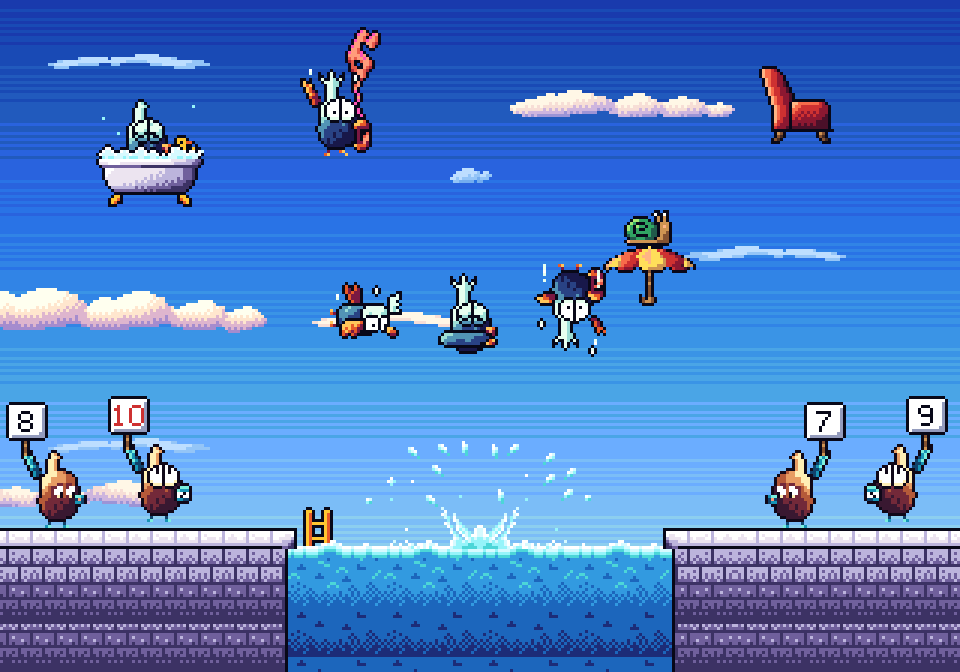
Bird in a clawfoot bathtub with a rubber duck (4 frames: bob, eyes shut, foam shifts, beads trail upward). Armchair: two drawings, front and profile, the other two tumble frames are flips. Snail riding on top of an open umbrella (4 frames: canopy and handle sway, eye stalk droops).
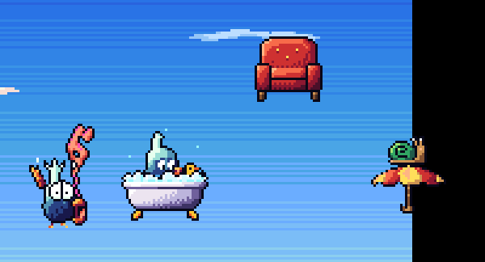
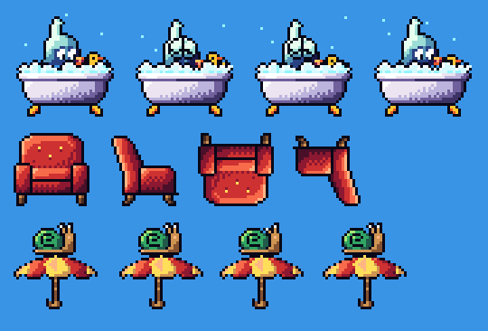
Water surface 32 pixels wide, 4 ripple frames, water body tile (second row is a darker palette-index swap), tiled pool edge with coping, brass ladder.
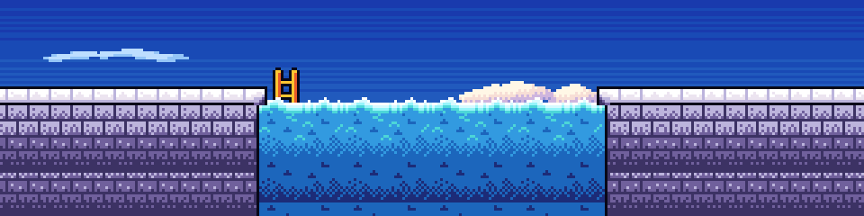
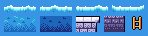
Left to right: in-game terror bird for comparison, belly flop (v2: lying flat along the water, belly down, head to the right looking down, near wing spread toward the viewer, far wing behind the back, feet trailing), cannonball (wings hug the knees, eyes shut), face first (the in-game wings-up frame flipped upside down, costs no new tiles). Top row player palette, bottom computer palette.
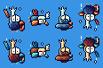
Shown with the face-first entry. Crown stages are typed; droplets fly on ballistic arcs and leave a ringlet where they land. Animation slowed to 66 ms a frame (game: 50 ms).
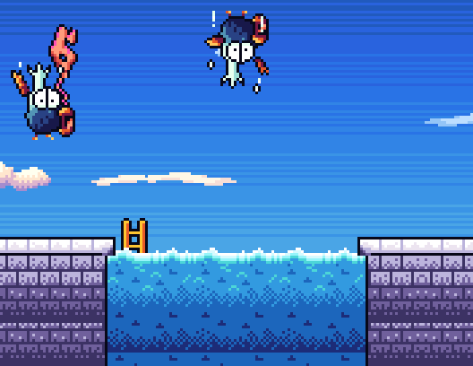
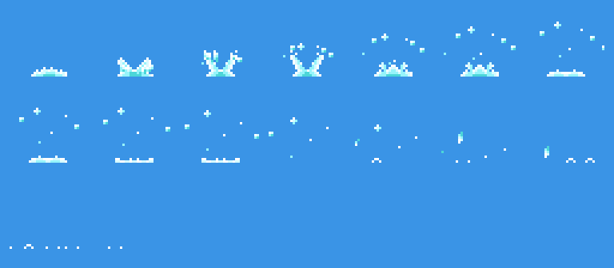
Shown with the cannonball. Crown rises, tears into strings, a rebound jet pinches off a bead.
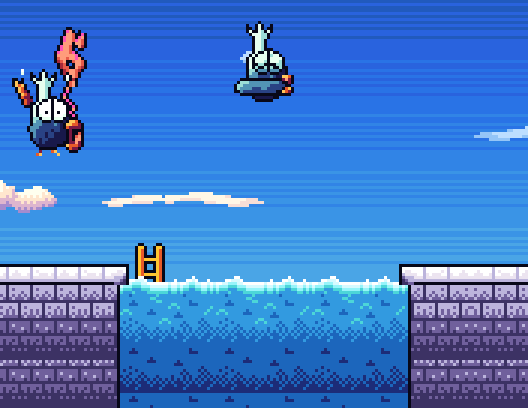
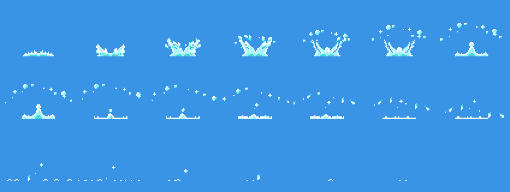
Shown with the belly flop. Medium crown plus low side sheets and 25 droplets.
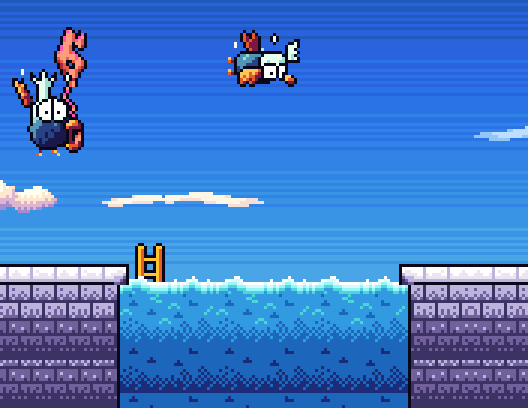
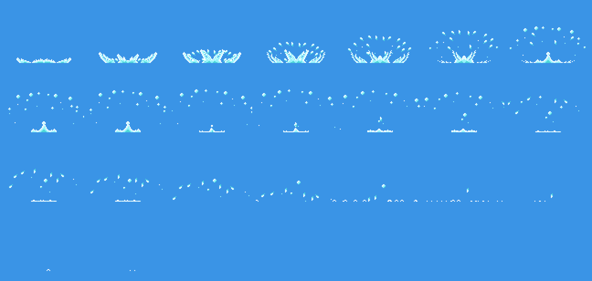
Crowd birds are the in-game bird in the computer and second-player palettes, wing up holding a card; second frame hops and shouts. Cards 1 to 10 below (10 in red).
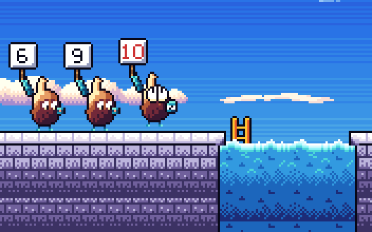
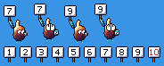
The old belly flop read as a squashed wide bird with low eyes. The new one lies flat in side view. Cannonball and face first are unchanged.
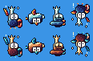
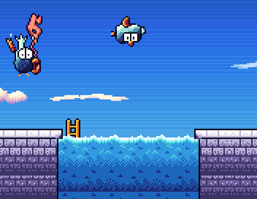